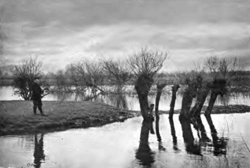
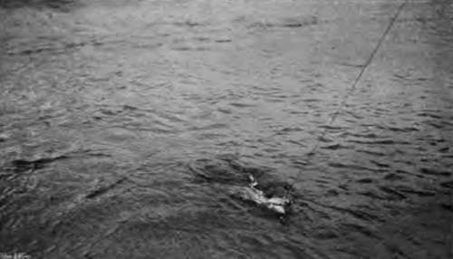

Chapter X. Fishing For Pike: Rods And Tackles
Description
This section is from the book "Fishing", by Horace G. Hutchinson. Also available from Amazon: Fishing.
Chapter X. Fishing For Pike: Rods And Tackles
The pike ranks, in the estimation of most anglers, as one of the gamest and most sport-giving of all fresh-water fish. A " 12-pounder" in its "prime," ue. from October to February, will give as much sport on " spinning-tackle " as Salmo-salar of similar size; which, salmon-fishers admit, should be played to the "gaff," or landing-net, at the rate of a minute per pound weight.
An important part of the pike-fisher's equipment is his rod. Some anglers give the preference to those made of hickory, lancewood, or greenheart; the former are heavy, and the last-named is a treacherous wood, liable to fracture, unless the joints are rent from the plank, thus ensuring straight fibres; if this is done, no rods can be better; they are powerful, elastic as steel, and extremely suitable for pike-fishing.
From a long experience with rods of various kinds, my opinion is, that no wood, or combination of woods, excels rods made of selected East India bamboo for " spinning," " paternoster-fishing," " live-baiting," or " trolling "-they are light in the hand, stiff, with sufficient elasticity, and powerful. My favourite pike rods for thirty years past have been made of these canes. Their hollowed butts contain the two interchangeable top-joints-a great convenience-the angler having no spare top to carry at the riverside, or maybe the top lying about in a punt, at the risk of being trodden on and broken. The rods are from 10 to 12 feet long, according to which top I use-the short one being for "live-bait snap-fishing," the long top for "spinning" and "paternostering."
With these two tops I find it unnecessary to cumber myself with more than one rod when away on a "raid" among the pike. My rods so constructed are as perfect now as when they were made; and with them I have captured many heavy pike, from 20 lbs. to 30 lbs., and up to 36 and 37 lbs. each. At the 1883 International Fisheries Exhibition, American fishing-rods, built up of split-cane, were shown as novelties, but since then great improvements have been made in England in these "split-cane" rods, notably by Hardy Brothers of Alnwick, and Messrs. Charles Far low and Company, 191 Strand, W.C. The last-named manufacture a very perfect pike rod, in which the solid cork-grip has the cane continued through it to the butt-end, and this imparts great casting-power. The rods are made with and without steel centres, the steel imparting remarkable strength and flexibility; they are fitted with lock-fast ferrules; the butt-ring and top-ring have revolving centres, the others are " guard-rings" ; they have two top-joints. The lengths of rod vary from 10 feet 6 inches to 12 feet, and they weigh 1 lb. 2½ ozs. The rings on a pike rod should be large, and all of one size; mine are 5/8-inch inside diameter, and of the kind known as "guard-rings," through which all accidental tangles will readily pass without jamming, and thus causing a " smash" in the tackle while playing, possibly, a heavy fish. The butt ends of pike rods should be fitted with an indiarubber button or knob, which may be obtained at almost any tackle shop. They are essential to the comfort of anglers, who, when spinning or trolling, often experience inconvenience from the pressure of the butt-ferrule against the groin, this being the usual position the end of the butt occupies in pike-fishing.
The pike reel may be constructed of wood and metal, some anglers prefer vulcanite and wood; either are to be recommended, especially if they combine a " check action" with " free-running," like Coxon's " Aerial" Reel.
The great improvement in this reel consists in its having the back made of aluminium in place of wood. Made thus the back will not warp.
With one of these reels an angler killed a 58£-lb. salmon in Norway, November 15, 1902. It is one of the best and lightest reels made.
A reel of 3^ inches diameter will carry seventy or eighty yards of line, which is practically enough for " spinning "; a 4-inch reel will hold a hundred yards of rather stouter line for live bait fishing. Reels should always have large barrels, or an arrangement of wires to increase the circumference of the barrel, so that the line may be wound up very quickly. The best reels have a guard placed round them which, if care is used, prevents the line "over running," and forming loose coils and complica tions; they also have a '1 spring-check " which can instantly be put " into gear " or " out-of-gear," a convenience when wading, or spinning from rough reedy banks, or among bushes, by which the necessity of dropping line on the ground, with the consequent risk of entanglement, is avoided. The great defect of cheap wood-reels without check-actions is their liability to overrun and from " tangles " in the line, which generally occurs when playing a fish, and results in the angler losing his temper and fish also. Another danger in cheap reels without "checks" is, if the pressure of the finger on the edge of the revolving wheel be for an instant removed, the line runs so freely as to produce an excess of slackness, which is a greater evil possibly than that before-mentioned ; for, having to follow a good fish just hooked rapidly along the river-bank, possibly over rough ground, nothing could be more trying to the angler than having, through a slack line, no control over his fish.
22.- Leger-Fishing By The Pollarded Willows.
23. - Fairly Hooked.
The next, and a very important necessary, is a reliable line for the reel. Pike lines are made of various materials - cotton, flax, silk, etc. The Manchester Cotton Twine Spinning Company manufacture lines that are fairly good and strong, although fine ; but they h ive a defect, they are apt to " kink " when wetted, as indeed do all lines that are " cable-laid " and not plaited. One of the best specially prepared lines I ever met with is of pure silk and plaited; it is rendered impervious to water by a " proofing " of oil, forced thoroughly into the fabric of the line by pressure in an air-pump; the line is pliant and elastic, and strong enough to capture pike, or any other fish, up to 40 lbs. or 50 lbs. weight. They are prepared by, and can be obtained at Messrs. C. Farlow & Co.
Continue to:
- prev: Fishing For Pike: Fables And Records. Continued
- Table of Contents
- next: Fishing For Pike: Rods And Tackles. Continued